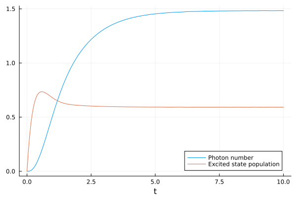

Tutorial
The basic usage is probably best illustrated with a brief example. In the following, we solve a simple model for a single-atom laser.
We start by loading the package, defining some symbolic parameters and the photonic annihilation operator a as well as the atomic transition operator σ, which denotes a transition from level j to level i as σ(i,j). This allows us to quickly write down the Hamiltonian and the collapse operators of the system with their corresponding decay rates.
using QuantumCumulants
# Define parameters
@variables Δ::Real g::Real γ::Real κ::Real ν::Real
# Define hilbert space
hf = FockSpace(:cavity)
ha = NLevelSpace(:atom, (:g, :e))
h = hf ⊗ ha
# Define the fundamental operators
@qnumbers a::Destroy(h)
σ(i, j) = Transition(h, :σ, i, j)
# Hamiltonian
H = Δ*a'*a + g*(a'*σ(:g, :e) + a*σ(:e, :g))
# Collapse operators
J = [a, σ(:g, :e), σ(:e, :g)]
rates = [κ, γ, ν]Now, we define a list of operators of which we want to compute the mean-field equations. We will only consider products of two operators. This is because later we will compute the dynamics of the system up to second order.
# Derive a set of equations
ops = [a'*a, σ(:e, :e), a'*σ(:g, :e)]
eqs = meanfield(ops, H, J; rates=rates)\begin{align} \frac{\mathrm{d}}{\mathrm{d}t} \langle a^{\dagger}a \rangle &= - \langle a^{\dagger}a \rangle \kappa + \langle a{\sigma}^{{21}} \rangle g \mathtt{im} - \langle a^{\dagger}{\sigma}^{{12}} \rangle g \mathtt{im} \\ \frac{\mathrm{d}}{\mathrm{d}t} \langle {\sigma}^{{22}} \rangle &= \nu + \langle {\sigma}^{{22}} \rangle \left( - \gamma - \nu \right) + \langle a^{\dagger}{\sigma}^{{12}} \rangle g \mathtt{im} - \langle a{\sigma}^{{21}} \rangle g \mathtt{im} \\ \frac{\mathrm{d}}{\mathrm{d}t} \langle a^{\dagger}{\sigma}^{{12}} \rangle &= \langle {\sigma}^{{22}} \rangle g \mathtt{im} - \langle a^{\dagger}a \rangle g \mathtt{im} + 2 \langle a^{\dagger}a{\sigma}^{{22}} \rangle g \mathtt{im} + \langle a^{\dagger}{\sigma}^{{12}} \rangle \left( - 0.5 \gamma - 0.5 \kappa - 0.5 \nu + \mathtt{im} \Delta \right) \end{align}
To obtain a closed set of equations, we expand higher-order products to second order.
# Expand the above equations to second order
eqs_expanded = cumulant_expansion(eqs, 2)\begin{align} \frac{\mathrm{d}}{\mathrm{d}t} \langle a^{\dagger}a \rangle &= - \langle a^{\dagger}a \rangle \kappa + \langle a{\sigma}^{{21}} \rangle g \mathtt{im} - \langle a^{\dagger}{\sigma}^{{12}} \rangle g \mathtt{im} \\ \frac{\mathrm{d}}{\mathrm{d}t} \langle {\sigma}^{{22}} \rangle &= \nu + \langle {\sigma}^{{22}} \rangle \left( - \gamma - \nu \right) + \langle a^{\dagger}{\sigma}^{{12}} \rangle g \mathtt{im} - \langle a{\sigma}^{{21}} \rangle g \mathtt{im} \\ \frac{\mathrm{d}}{\mathrm{d}t} \langle a^{\dagger}{\sigma}^{{12}} \rangle &= \langle {\sigma}^{{22}} \rangle g \mathtt{im} - \langle a^{\dagger}a \rangle g \mathtt{im} + \langle a^{\dagger}{\sigma}^{{12}} \rangle \left( - 0.5 \gamma - 0.5 \kappa - 0.5 \nu + \mathtt{im} \Delta \right) + 2 \left( \langle a^{\dagger} \rangle \langle a{\sigma}^{{22}} \rangle + \langle a^{\dagger}a \rangle \langle {\sigma}^{{22}} \rangle + \langle a^{\dagger}{\sigma}^{{22}} \rangle \langle a \rangle - 2 \langle a^{\dagger} \rangle \langle {\sigma}^{{22}} \rangle \langle a \rangle \right) g \mathtt{im} \end{align}
The first-order contributions are always zero and can therefore be neglected. You can try adding a and σ(:g,:e) to the list of operators ops in order to see that yourself. Even more conveniently, complete automatically finds all missing averages and derives the corresponding equations, giving a closed system in one call.
# Close the system by deriving equations for any missing averages
eqs_full = complete(eqs_expanded)\begin{align} \frac{\mathrm{d}}{\mathrm{d}t} \langle a^{\dagger}a \rangle &= - \langle a^{\dagger}a \rangle \kappa + \langle a{\sigma}^{{21}} \rangle g \mathtt{im} - \langle a^{\dagger}{\sigma}^{{12}} \rangle g \mathtt{im} \\ \frac{\mathrm{d}}{\mathrm{d}t} \langle {\sigma}^{{22}} \rangle &= \nu + \langle {\sigma}^{{22}} \rangle \left( - \gamma - \nu \right) + \langle a^{\dagger}{\sigma}^{{12}} \rangle g \mathtt{im} - \langle a{\sigma}^{{21}} \rangle g \mathtt{im} \\ \frac{\mathrm{d}}{\mathrm{d}t} \langle a^{\dagger}{\sigma}^{{12}} \rangle &= \langle {\sigma}^{{22}} \rangle g \mathtt{im} - \langle a^{\dagger}a \rangle g \mathtt{im} + \langle a^{\dagger}{\sigma}^{{12}} \rangle \left( - 0.5 \gamma - 0.5 \kappa - 0.5 \nu + \mathtt{im} \Delta \right) + 2 \left( \langle a^{\dagger} \rangle \langle a{\sigma}^{{22}} \rangle + \langle a^{\dagger}a \rangle \langle {\sigma}^{{22}} \rangle + \langle a^{\dagger}{\sigma}^{{22}} \rangle \langle a \rangle - 2 \langle a^{\dagger} \rangle \langle {\sigma}^{{22}} \rangle \langle a \rangle \right) g \mathtt{im} \\ \frac{\mathrm{d}}{\mathrm{d}t} \langle a^{\dagger} \rangle &= \langle {\sigma}^{{21}} \rangle g \mathtt{im} + \langle a^{\dagger} \rangle \left( - 0.5 \kappa + \mathtt{im} \Delta \right) \\ \frac{\mathrm{d}}{\mathrm{d}t} \langle a \rangle &= - \langle {\sigma}^{{12}} \rangle g \mathtt{im} + \langle a \rangle \left( - 0.5 \kappa - \mathtt{im} \Delta \right) \\ \frac{\mathrm{d}}{\mathrm{d}t} \langle a{\sigma}^{{22}} \rangle &= \langle a \rangle \nu + \langle a{\sigma}^{{22}} \rangle \left( - \gamma - 0.5 \kappa - \nu - \mathtt{im} \Delta \right) - \left( \langle {\sigma}^{{21}} \rangle \langle aa \rangle + 2 \langle a{\sigma}^{{21}} \rangle \langle a \rangle - 2 \langle a \rangle^{2} \langle {\sigma}^{{21}} \rangle \right) g \mathtt{im} + \left( \langle a^{\dagger} \rangle \langle a{\sigma}^{{12}} \rangle + \langle {\sigma}^{{12}} \rangle \langle a^{\dagger}a \rangle + \langle a^{\dagger}{\sigma}^{{12}} \rangle \langle a \rangle - 2 \langle {\sigma}^{{12}} \rangle \langle a^{\dagger} \rangle \langle a \rangle \right) g \mathtt{im} \\ \frac{\mathrm{d}}{\mathrm{d}t} \langle a^{\dagger}{\sigma}^{{22}} \rangle &= \langle a^{\dagger} \rangle \nu + \langle a^{\dagger}{\sigma}^{{22}} \rangle \left( - \gamma - 0.5 \kappa - \nu + \mathtt{im} \Delta \right) + \left( \langle {\sigma}^{{12}} \rangle \langle a^{\dagger}a^{\dagger} \rangle + 2 \langle a^{\dagger}{\sigma}^{{12}} \rangle \langle a^{\dagger} \rangle - 2 \langle a^{\dagger} \rangle^{2} \langle {\sigma}^{{12}} \rangle \right) g \mathtt{im} - \left( \langle a \rangle \langle a^{\dagger}{\sigma}^{{21}} \rangle + \langle a^{\dagger} \rangle \langle a{\sigma}^{{21}} \rangle + \langle {\sigma}^{{21}} \rangle \langle a^{\dagger}a \rangle - 2 \langle a^{\dagger} \rangle \langle {\sigma}^{{21}} \rangle \langle a \rangle \right) g \mathtt{im} \\ \frac{\mathrm{d}}{\mathrm{d}t} \langle {\sigma}^{{21}} \rangle &= \langle {\sigma}^{{21}} \rangle \left( - 0.5 \gamma - 0.5 \nu \right) + \langle a^{\dagger} \rangle g \mathtt{im} - 2 \langle a^{\dagger}{\sigma}^{{22}} \rangle g \mathtt{im} \\ \frac{\mathrm{d}}{\mathrm{d}t} \langle {\sigma}^{{12}} \rangle &= \langle {\sigma}^{{12}} \rangle \left( - 0.5 \gamma - 0.5 \nu \right) - \langle a \rangle g \mathtt{im} + 2 \langle a{\sigma}^{{22}} \rangle g \mathtt{im} \\ \frac{\mathrm{d}}{\mathrm{d}t} \langle aa \rangle &= - 2 \langle a{\sigma}^{{12}} \rangle g \mathtt{im} + \langle aa \rangle \left( - \kappa - 2 \mathtt{im} \Delta \right) \\ \frac{\mathrm{d}}{\mathrm{d}t} \langle a^{\dagger}a^{\dagger} \rangle &= 2 \langle a^{\dagger}{\sigma}^{{21}} \rangle g \mathtt{im} + \langle a^{\dagger}a^{\dagger} \rangle \left( - \kappa + 2 \mathtt{im} \Delta \right) \\ \frac{\mathrm{d}}{\mathrm{d}t} \langle a{\sigma}^{{12}} \rangle &= - \langle aa \rangle g \mathtt{im} + \langle a{\sigma}^{{12}} \rangle \left( - 0.5 \gamma - 0.5 \kappa - 0.5 \nu - \mathtt{im} \Delta \right) + 2 \left( \langle {\sigma}^{{22}} \rangle \langle aa \rangle + 2 \langle a{\sigma}^{{22}} \rangle \langle a \rangle - 2 \langle a \rangle^{2} \langle {\sigma}^{{22}} \rangle \right) g \mathtt{im} \\ \frac{\mathrm{d}}{\mathrm{d}t} \langle a^{\dagger}{\sigma}^{{21}} \rangle &= \langle a^{\dagger}a^{\dagger} \rangle g \mathtt{im} + \langle a^{\dagger}{\sigma}^{{21}} \rangle \left( - 0.5 \gamma - 0.5 \kappa - 0.5 \nu + \mathtt{im} \Delta \right) - 2 \left( \langle a^{\dagger}a^{\dagger} \rangle \langle {\sigma}^{{22}} \rangle + 2 \langle a^{\dagger} \rangle \langle a^{\dagger}{\sigma}^{{22}} \rangle - 2 \langle a^{\dagger} \rangle^{2} \langle {\sigma}^{{22}} \rangle \right) g \mathtt{im} \end{align}
Finally, we convert the MeanfieldEquations to a System from ModelingToolkitBase, which can be solved numerically with OrdinaryDiffEq.
# Generate a ModelingToolkitBase System
using ModelingToolkitBase
sys = mtkcompile(System(eqs_full; name=:laser))
# Solve the system using the OrdinaryDiffEq package
using OrdinaryDiffEqTsit5
u0 = zeros(ComplexF64, length(eqs_full.states))
p0 = [Δ => 0.0, g => 1.5, γ => 0.25, κ => 1.0, ν => 4.0]
prob = ODEProblem(sys, merge(initial_values(eqs_full, u0), Dict(p0)), (0.0, 10.0))
sol = solve(prob, Tsit5())Numeric trajectories of any operator-average are recovered with get_solution, which substitutes the symbolic average into the compiled solution and returns a callable in t:
using Plots
ts = range(0.0, 10.0; length=200)
n = real.(get_solution(sol, a'*a, eqs_full).(ts))
pe = real.(get_solution(sol, σ(:e, :e), eqs_full).(ts))
plot(ts, n, label="Photon number", xlabel="t")
plot!(ts, pe, label="Excited state population")